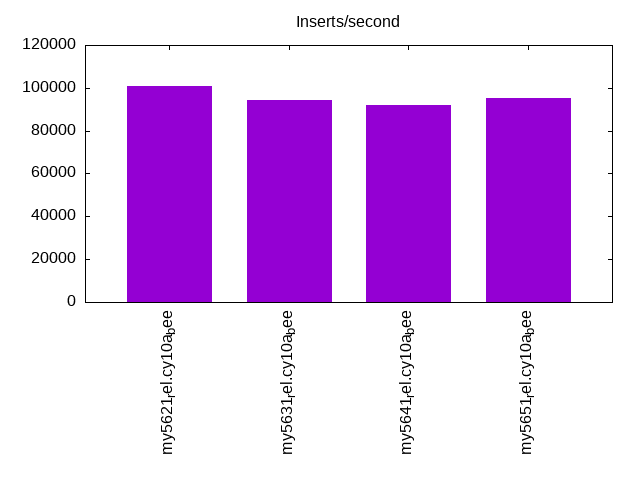
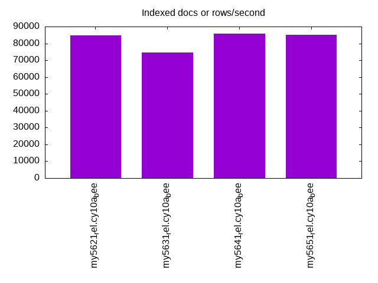
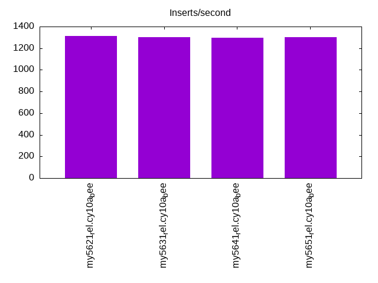
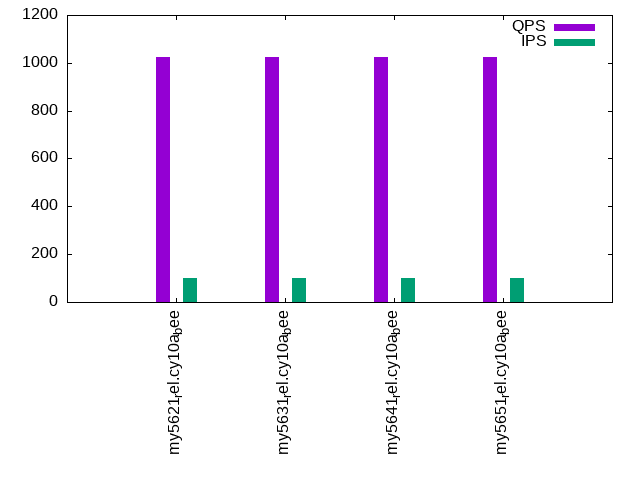
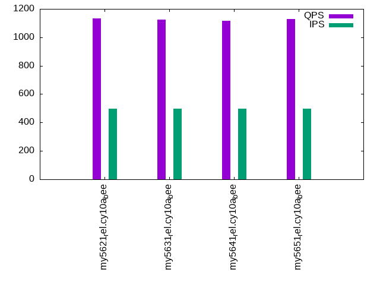
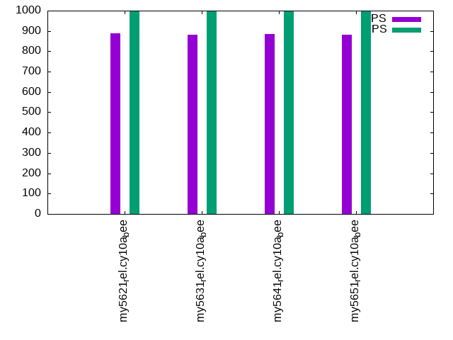

This is a report for the insert benchmark with 800M docs and 1 client(s). It is generated by scripts (bash, awk, sed) and Tufte might not be impressed. An overview of the insert benchmark is here and a short update is here. Below, by DBMS, I mean DBMS+version.config. An example is my8020.c10b40 where my means MySQL, 8020 is version 8.0.20 and c10b40 is the name for the configuration file.
The test server has 8 AMD cores, 16G RAM and an NVMe SSD. It is described here as the Beelink. The benchmark was run with 1 client and there were 1 or 3 connections per client (1 for queries or inserts without rate limits, 1+1 for rate limited inserts+deletes). There is 1 table. It loads 800M rows without secondary indexes, creates secondary indexes, then inserts 5M rows with a delete per insert to avoid growing the table. It then does 3 read+write tests for 1200s each that do queries as fast as possible with 100, 500 and then 1000 inserts/second/client concurrent with the queries and 1000 deletes/second to avoid growing the table. The database is larger than memory.
The tested DBMS are:
The numbers are inserts/s for l.i0 and l.i1, indexed docs (or rows) /s for l.x and queries/s for q100, q500, q1000. The values are the average rate over the entire test for inserts (IPS) and queries (QPS). The range of values for IPS and QPS is split into 3 parts: bottom 25%, middle 50%, top 25%. Values in the bottom 25% have a red background, values in the top 25% have a green background and values in the middle have no color. A gray background is used for values that can be ignored because the DBMS did not sustain the target insert rate. Red backgrounds are not used when the minimum value is within 80% of the max value.
| dbms | l.i0 | l.x | l.i1 | q100.1 | q500.1 | q1000.1 |
|---|---|---|---|---|---|---|
| my5621_rel.cy10a_bee | 101087 | 84918 | 1315 | 1024 | 1132 | 888 |
| my5631_rel.cy10a_bee | 94206 | 74553 | 1300 | 1024 | 1124 | 883 |
| my5641_rel.cy10a_bee | 92049 | 85931 | 1296 | 1024 | 1118 | 886 |
| my5651_rel.cy10a_bee | 95181 | 85226 | 1304 | 1026 | 1127 | 880 |
This table has relative throughput, throughput for the DBMS relative to the DBMS in the first line, using the absolute throughput from the previous table. Values less than 0.95 have a yellow background. Values greater than 1.05 have a blue background.
| dbms | l.i0 | l.x | l.i1 | q100.1 | q500.1 | q1000.1 |
|---|---|---|---|---|---|---|
| my5621_rel.cy10a_bee | 1.00 | 1.00 | 1.00 | 1.00 | 1.00 | 1.00 |
| my5631_rel.cy10a_bee | 0.93 | 0.88 | 0.99 | 1.00 | 0.99 | 0.99 |
| my5641_rel.cy10a_bee | 0.91 | 1.01 | 0.99 | 1.00 | 0.99 | 1.00 |
| my5651_rel.cy10a_bee | 0.94 | 1.00 | 0.99 | 1.00 | 1.00 | 0.99 |
This lists the average rate of inserts/s for the tests that do inserts concurrent with queries. For such tests the query rate is listed in the table above. The read+write tests are setup so that the insert rate should match the target rate every second. Cells that are not at least 95% of the target have a red background to indicate a failure to satisfy the target.
| dbms | q100.1 | q500.1 | q1000.1 |
|---|---|---|---|
| my5621_rel.cy10a_bee | 100 | 499 | 998 |
| my5631_rel.cy10a_bee | 100 | 499 | 998 |
| my5641_rel.cy10a_bee | 100 | 498 | 998 |
| my5651_rel.cy10a_bee | 100 | 499 | 998 |
| target | 100 | 500 | 1000 |
l.i0: load without secondary indexes. Graphs for performance per 1-second interval are here.
Average throughput:
Insert response time histogram: each cell has the percentage of responses that take <= the time in the header and max is the max response time in seconds. For the max column values in the top 25% of the range have a red background and in the bottom 25% of the range have a green background. The red background is not used when the min value is within 80% of the max value.
| dbms | 256us | 1ms | 4ms | 16ms | 64ms | 256ms | 1s | 4s | 16s | gt | max |
|---|---|---|---|---|---|---|---|---|---|---|---|
| my5621_rel.cy10a_bee | 92.981 | 6.891 | 0.107 | 0.017 | 0.004 | 0.176 | |||||
| my5631_rel.cy10a_bee | 79.019 | 20.837 | 0.071 | 0.070 | 0.004 | 0.230 | |||||
| my5641_rel.cy10a_bee | 62.595 | 37.260 | 0.075 | 0.065 | 0.004 | 0.212 | |||||
| my5651_rel.cy10a_bee | 83.653 | 16.205 | 0.069 | 0.070 | 0.004 | 0.246 |
Performance metrics for the DBMS listed above. Some are normalized by throughput, others are not. Legend for results is here.
ips qps rps rmbps wps wmbps rpq rkbpq wpi wkbpi csps cpups cspq cpupq dbgb1 dbgb2 rss maxop p50 p99 tag 101087 0 886 3.5 491.7 36.1 0.009 0.035 0.005 0.366 12846 21.8 0.127 17 52.6 93.1 10.6 0.176 101587 85053 800m.my5621_rel.cy10a_bee 94206 0 825 3.2 455.9 33.6 0.009 0.035 0.005 0.366 11965 21.5 0.127 18 52.6 93.1 10.6 0.230 94622 77310 800m.my5631_rel.cy10a_bee 92049 0 806 3.1 447.2 32.9 0.009 0.035 0.005 0.366 11754 21.4 0.128 19 52.6 93.1 10.6 0.212 92501 75713 800m.my5641_rel.cy10a_bee 95181 0 834 3.3 461.3 34.0 0.009 0.035 0.005 0.366 12099 21.5 0.127 18 52.6 93.1 10.6 0.246 95630 77190 800m.my5651_rel.cy10a_bee
l.x: create secondary indexes.
Average throughput:
Performance metrics for the DBMS listed above. Some are normalized by throughput, others are not. Legend for results is here.
ips qps rps rmbps wps wmbps rpq rkbpq wpi wkbpi csps cpups cspq cpupq dbgb1 dbgb2 rss maxop p50 p99 tag 84918 0 559 80.9 699.7 102.5 0.007 0.975 0.008 1.236 1963 11.3 0.023 11 108.4 148.9 10.8 0.015 NA NA 800m.my5621_rel.cy10a_bee 74553 0 484 71.1 609.6 90.1 0.006 0.976 0.008 1.237 1781 11.2 0.024 12 108.4 148.9 10.8 0.016 NA NA 800m.my5631_rel.cy10a_bee 85931 0 566 82.0 701.5 103.7 0.007 0.977 0.008 1.236 1926 11.4 0.022 11 108.4 148.9 10.8 0.010 NA NA 800m.my5641_rel.cy10a_bee 85226 0 559 81.2 701.0 102.9 0.007 0.976 0.008 1.236 1939 11.2 0.023 11 108.4 148.9 10.8 0.011 NA NA 800m.my5651_rel.cy10a_bee
l.i1: continue load after secondary indexes created. Graphs for performance per 1-second interval are here.
Average throughput:
Insert response time histogram: each cell has the percentage of responses that take <= the time in the header and max is the max response time in seconds. For the max column values in the top 25% of the range have a red background and in the bottom 25% of the range have a green background. The red background is not used when the min value is within 80% of the max value.
| dbms | 256us | 1ms | 4ms | 16ms | 64ms | 256ms | 1s | 4s | 16s | gt | max |
|---|---|---|---|---|---|---|---|---|---|---|---|
| my5621_rel.cy10a_bee | 1.828 | 87.643 | 10.527 | 0.002 | 0.873 | ||||||
| my5631_rel.cy10a_bee | 1.481 | 87.369 | 11.142 | 0.008 | 0.812 | ||||||
| my5641_rel.cy10a_bee | 1.633 | 87.319 | 11.041 | 0.007 | 0.822 | ||||||
| my5651_rel.cy10a_bee | 1.815 | 87.164 | 11.016 | 0.005 | 0.777 |
Delete response time histogram: each cell has the percentage of responses that take <= the time in the header and max is the max response time in seconds. For the max column values in the top 25% of the range have a red background and in the bottom 25% of the range have a green background. The red background is not used when the min value is within 80% of the max value.
| dbms | 256us | 1ms | 4ms | 16ms | 64ms | 256ms | 1s | 4s | 16s | gt | max |
|---|---|---|---|---|---|---|---|---|---|---|---|
| my5621_rel.cy10a_bee | 2.951 | 91.090 | 5.955 | 0.003 | 0.001 | 0.733 | |||||
| my5631_rel.cy10a_bee | 3.075 | 90.934 | 5.979 | 0.011 | 0.001 | 0.592 | |||||
| my5641_rel.cy10a_bee | 2.861 | 91.264 | 5.868 | 0.006 | 0.001 | 0.657 | |||||
| my5651_rel.cy10a_bee | 3.295 | 90.845 | 5.853 | 0.006 | 0.001 | 0.598 |
Performance metrics for the DBMS listed above. Some are normalized by throughput, others are not. Legend for results is here.
ips qps rps rmbps wps wmbps rpq rkbpq wpi wkbpi csps cpups cspq cpupq dbgb1 dbgb2 rss maxop p50 p99 tag 1315 0 7588 118.0 9832.8 315.7 5.771 91.885 7.479 245.927 46337 14.7 35.245 894 146.1 186.7 10.5 0.873 1249 699 800m.my5621_rel.cy10a_bee 1300 0 7527 117.0 9755.4 313.2 5.790 92.185 7.504 246.743 45775 14.6 35.212 898 146.0 186.7 10.5 0.812 1249 690 800m.my5631_rel.cy10a_bee 1296 0 7512 116.8 9819.6 312.6 5.795 92.268 7.575 246.896 45936 14.7 35.436 907 146.0 186.6 10.5 0.822 1249 697 800m.my5641_rel.cy10a_bee 1304 0 7551 117.4 9869.9 314.1 5.790 92.183 7.568 246.645 45958 14.7 35.242 902 146.0 186.7 10.5 0.777 1249 649 800m.my5651_rel.cy10a_bee
q100.1: range queries with 100 insert/s per client. Graphs for performance per 1-second interval are here.
Average throughput:
Query response time histogram: each cell has the percentage of responses that take <= the time in the header and max is the max response time in seconds. For max values in the top 25% of the range have a red background and in the bottom 25% of the range have a green background. The red background is not used when the min value is within 80% of the max value.
| dbms | 256us | 1ms | 4ms | 16ms | 64ms | 256ms | 1s | 4s | 16s | gt | max |
|---|---|---|---|---|---|---|---|---|---|---|---|
| my5621_rel.cy10a_bee | 28.918 | 16.794 | 52.799 | 1.480 | 0.009 | 0.048 | |||||
| my5631_rel.cy10a_bee | 28.670 | 16.965 | 52.839 | 1.517 | 0.009 | 0.040 | |||||
| my5641_rel.cy10a_bee | 28.123 | 17.609 | 52.727 | 1.532 | 0.009 | 0.047 | |||||
| my5651_rel.cy10a_bee | 28.636 | 17.047 | 52.782 | 1.527 | 0.009 | 0.048 |
Insert response time histogram: each cell has the percentage of responses that take <= the time in the header and max is the max response time in seconds. For max values in the top 25% of the range have a red background and in the bottom 25% of the range have a green background. The red background is not used when the min value is within 80% of the max value.
| dbms | 256us | 1ms | 4ms | 16ms | 64ms | 256ms | 1s | 4s | 16s | gt | max |
|---|---|---|---|---|---|---|---|---|---|---|---|
| my5621_rel.cy10a_bee | 0.917 | 78.708 | 20.375 | 0.125 | |||||||
| my5631_rel.cy10a_bee | 2.083 | 58.833 | 39.083 | 0.132 | |||||||
| my5641_rel.cy10a_bee | 1.000 | 72.375 | 26.625 | 0.141 | |||||||
| my5651_rel.cy10a_bee | 2.708 | 60.875 | 36.417 | 0.125 |
Delete response time histogram: each cell has the percentage of responses that take <= the time in the header and max is the max response time in seconds. For max values in the top 25% of the range have a red background and in the bottom 25% of the range have a green background. The red background is not used when the min value is within 80% of the max value.
| dbms | 256us | 1ms | 4ms | 16ms | 64ms | 256ms | 1s | 4s | 16s | gt | max |
|---|---|---|---|---|---|---|---|---|---|---|---|
| my5621_rel.cy10a_bee | 9.542 | 68.542 | 21.917 | 0.060 | |||||||
| my5631_rel.cy10a_bee | 9.250 | 68.917 | 21.833 | 0.057 | |||||||
| my5641_rel.cy10a_bee | 10.917 | 64.208 | 24.875 | 0.054 | |||||||
| my5651_rel.cy10a_bee | 11.167 | 67.708 | 21.125 | 0.052 |
Performance metrics for the DBMS listed above. Some are normalized by throughput, others are not. Legend for results is here.
ips qps rps rmbps wps wmbps rpq rkbpq wpi wkbpi csps cpups cspq cpupq dbgb1 dbgb2 rss maxop p50 p99 tag 100 1024 9884 154.4 5678.3 174.8 9.649 154.317 56.897 1793.718 39389 10.6 38.451 828 146.1 186.7 10.5 0.048 927 751 800m.my5621_rel.cy10a_bee 100 1024 9852 153.9 5638.3 173.4 9.617 153.814 56.553 1781.168 39188 10.6 38.255 828 146.0 186.7 10.5 0.040 927 735 800m.my5631_rel.cy10a_bee 100 1024 9829 153.5 5678.2 173.1 9.598 153.505 57.010 1779.154 39312 10.6 38.391 828 146.0 186.6 10.5 0.047 927 750 800m.my5641_rel.cy10a_bee 100 1026 9823 153.4 5659.0 172.6 9.574 153.116 56.704 1771.365 39216 10.5 38.222 819 146.0 186.7 10.5 0.048 911 751 800m.my5651_rel.cy10a_bee
q500.1: range queries with 500 insert/s per client. Graphs for performance per 1-second interval are here.
Average throughput:
Query response time histogram: each cell has the percentage of responses that take <= the time in the header and max is the max response time in seconds. For max values in the top 25% of the range have a red background and in the bottom 25% of the range have a green background. The red background is not used when the min value is within 80% of the max value.
| dbms | 256us | 1ms | 4ms | 16ms | 64ms | 256ms | 1s | 4s | 16s | gt | max |
|---|---|---|---|---|---|---|---|---|---|---|---|
| my5621_rel.cy10a_bee | 32.561 | 15.008 | 51.658 | 0.768 | 0.004 | 0.040 | |||||
| my5631_rel.cy10a_bee | 31.724 | 15.636 | 51.915 | 0.721 | 0.005 | nonzero | 0.067 | ||||
| my5641_rel.cy10a_bee | 31.912 | 15.407 | 51.821 | 0.855 | 0.005 | 0.045 | |||||
| my5651_rel.cy10a_bee | 32.191 | 15.226 | 51.790 | 0.789 | 0.004 | 0.042 |
Insert response time histogram: each cell has the percentage of responses that take <= the time in the header and max is the max response time in seconds. For max values in the top 25% of the range have a red background and in the bottom 25% of the range have a green background. The red background is not used when the min value is within 80% of the max value.
| dbms | 256us | 1ms | 4ms | 16ms | 64ms | 256ms | 1s | 4s | 16s | gt | max |
|---|---|---|---|---|---|---|---|---|---|---|---|
| my5621_rel.cy10a_bee | 1.625 | 94.658 | 3.717 | 0.112 | |||||||
| my5631_rel.cy10a_bee | 1.283 | 96.033 | 2.683 | 0.113 | |||||||
| my5641_rel.cy10a_bee | 0.975 | 93.633 | 5.392 | 0.152 | |||||||
| my5651_rel.cy10a_bee | 1.275 | 94.208 | 4.517 | 0.127 |
Delete response time histogram: each cell has the percentage of responses that take <= the time in the header and max is the max response time in seconds. For max values in the top 25% of the range have a red background and in the bottom 25% of the range have a green background. The red background is not used when the min value is within 80% of the max value.
| dbms | 256us | 1ms | 4ms | 16ms | 64ms | 256ms | 1s | 4s | 16s | gt | max |
|---|---|---|---|---|---|---|---|---|---|---|---|
| my5621_rel.cy10a_bee | 14.617 | 80.033 | 5.342 | 0.008 | 0.071 | ||||||
| my5631_rel.cy10a_bee | 13.642 | 81.308 | 5.033 | 0.017 | 0.074 | ||||||
| my5641_rel.cy10a_bee | 14.233 | 79.908 | 5.858 | 0.055 | |||||||
| my5651_rel.cy10a_bee | 15.250 | 79.033 | 5.700 | 0.017 | 0.087 |
Performance metrics for the DBMS listed above. Some are normalized by throughput, others are not. Legend for results is here.
ips qps rps rmbps wps wmbps rpq rkbpq wpi wkbpi csps cpups cspq cpupq dbgb1 dbgb2 rss maxop p50 p99 tag 499 1132 9376 146.3 4071.5 125.5 8.279 132.264 8.164 257.719 34456 10.4 30.425 735 146.1 186.7 10.5 0.040 1135 1054 800m.my5621_rel.cy10a_bee 499 1124 9345 145.8 4062.7 125.2 8.311 132.783 8.147 257.132 34210 10.4 30.425 740 146.0 186.7 10.5 0.067 1119 1055 800m.my5631_rel.cy10a_bee 498 1118 9317 145.4 4108.6 125.3 8.333 133.129 8.245 257.564 34294 10.4 30.671 744 146.0 186.6 10.5 0.045 1119 447 800m.my5641_rel.cy10a_bee 499 1127 9338 145.7 4104.8 125.2 8.288 132.405 8.224 256.931 34312 10.4 30.451 738 146.0 186.7 10.5 0.042 1119 1055 800m.my5651_rel.cy10a_bee
q1000.1: range queries with 1000 insert/s per client. Graphs for performance per 1-second interval are here.
Average throughput:
Query response time histogram: each cell has the percentage of responses that take <= the time in the header and max is the max response time in seconds. For max values in the top 25% of the range have a red background and in the bottom 25% of the range have a green background. The red background is not used when the min value is within 80% of the max value.
| dbms | 256us | 1ms | 4ms | 16ms | 64ms | 256ms | 1s | 4s | 16s | gt | max |
|---|---|---|---|---|---|---|---|---|---|---|---|
| my5621_rel.cy10a_bee | 22.007 | 18.855 | 56.819 | 2.309 | 0.011 | 0.044 | |||||
| my5631_rel.cy10a_bee | 20.569 | 20.185 | 56.805 | 2.429 | 0.012 | 0.047 | |||||
| my5641_rel.cy10a_bee | 20.621 | 20.113 | 57.036 | 2.218 | 0.012 | nonzero | 0.066 | ||||
| my5651_rel.cy10a_bee | 20.336 | 20.390 | 56.918 | 2.344 | 0.011 | 0.044 |
Insert response time histogram: each cell has the percentage of responses that take <= the time in the header and max is the max response time in seconds. For max values in the top 25% of the range have a red background and in the bottom 25% of the range have a green background. The red background is not used when the min value is within 80% of the max value.
| dbms | 256us | 1ms | 4ms | 16ms | 64ms | 256ms | 1s | 4s | 16s | gt | max |
|---|---|---|---|---|---|---|---|---|---|---|---|
| my5621_rel.cy10a_bee | 12.858 | 80.308 | 6.833 | 0.129 | |||||||
| my5631_rel.cy10a_bee | 11.213 | 80.837 | 7.950 | 0.136 | |||||||
| my5641_rel.cy10a_bee | 10.350 | 82.721 | 6.929 | 0.138 | |||||||
| my5651_rel.cy10a_bee | 12.304 | 81.117 | 6.579 | 0.131 |
Delete response time histogram: each cell has the percentage of responses that take <= the time in the header and max is the max response time in seconds. For max values in the top 25% of the range have a red background and in the bottom 25% of the range have a green background. The red background is not used when the min value is within 80% of the max value.
| dbms | 256us | 1ms | 4ms | 16ms | 64ms | 256ms | 1s | 4s | 16s | gt | max |
|---|---|---|---|---|---|---|---|---|---|---|---|
| my5621_rel.cy10a_bee | 7.025 | 89.154 | 3.821 | 0.060 | |||||||
| my5631_rel.cy10a_bee | 6.217 | 89.608 | 4.175 | 0.057 | |||||||
| my5641_rel.cy10a_bee | 6.058 | 89.921 | 4.017 | 0.004 | 0.077 | ||||||
| my5651_rel.cy10a_bee | 7.037 | 89.079 | 3.883 | 0.052 |
Performance metrics for the DBMS listed above. Some are normalized by throughput, others are not. Legend for results is here.
ips qps rps rmbps wps wmbps rpq rkbpq wpi wkbpi csps cpups cspq cpupq dbgb1 dbgb2 rss maxop p50 p99 tag 998 888 11453 178.5 7526.3 232.2 12.905 205.988 7.545 238.369 49378 15.6 55.637 1406 146.1 186.7 10.5 0.044 880 800 800m.my5621_rel.cy10a_bee 998 883 11419 178.0 7516.8 231.9 12.929 206.375 7.536 238.032 49140 15.7 55.638 1422 146.0 186.7 10.5 0.047 879 815 800m.my5631_rel.cy10a_bee 998 886 11439 178.3 7592.8 232.1 12.916 206.161 7.612 238.219 49319 15.7 55.683 1418 146.0 186.6 10.5 0.066 879 815 800m.my5641_rel.cy10a_bee 998 880 11408 177.8 7588.3 231.9 12.958 206.836 7.601 237.898 49126 15.5 55.800 1408 146.0 186.7 10.5 0.044 879 815 800m.my5651_rel.cy10a_bee
l.i0: load without secondary indexes
Performance metrics for all DBMS, not just the ones listed above. Some are normalized by throughput, others are not. Legend for results is here.
ips qps rps rmbps wps wmbps rpq rkbpq wpi wkbpi csps cpups cspq cpupq dbgb1 dbgb2 rss maxop p50 p99 tag 101087 0 886 3.5 491.7 36.1 0.009 0.035 0.005 0.366 12846 21.8 0.127 17 52.6 93.1 10.6 0.176 101587 85053 800m.my5621_rel.cy10a_bee 94206 0 825 3.2 455.9 33.6 0.009 0.035 0.005 0.366 11965 21.5 0.127 18 52.6 93.1 10.6 0.230 94622 77310 800m.my5631_rel.cy10a_bee 92049 0 806 3.1 447.2 32.9 0.009 0.035 0.005 0.366 11754 21.4 0.128 19 52.6 93.1 10.6 0.212 92501 75713 800m.my5641_rel.cy10a_bee 95181 0 834 3.3 461.3 34.0 0.009 0.035 0.005 0.366 12099 21.5 0.127 18 52.6 93.1 10.6 0.246 95630 77190 800m.my5651_rel.cy10a_bee
l.x: create secondary indexes
Performance metrics for all DBMS, not just the ones listed above. Some are normalized by throughput, others are not. Legend for results is here.
ips qps rps rmbps wps wmbps rpq rkbpq wpi wkbpi csps cpups cspq cpupq dbgb1 dbgb2 rss maxop p50 p99 tag 84918 0 559 80.9 699.7 102.5 0.007 0.975 0.008 1.236 1963 11.3 0.023 11 108.4 148.9 10.8 0.015 NA NA 800m.my5621_rel.cy10a_bee 74553 0 484 71.1 609.6 90.1 0.006 0.976 0.008 1.237 1781 11.2 0.024 12 108.4 148.9 10.8 0.016 NA NA 800m.my5631_rel.cy10a_bee 85931 0 566 82.0 701.5 103.7 0.007 0.977 0.008 1.236 1926 11.4 0.022 11 108.4 148.9 10.8 0.010 NA NA 800m.my5641_rel.cy10a_bee 85226 0 559 81.2 701.0 102.9 0.007 0.976 0.008 1.236 1939 11.2 0.023 11 108.4 148.9 10.8 0.011 NA NA 800m.my5651_rel.cy10a_bee
l.i1: continue load after secondary indexes created
Performance metrics for all DBMS, not just the ones listed above. Some are normalized by throughput, others are not. Legend for results is here.
ips qps rps rmbps wps wmbps rpq rkbpq wpi wkbpi csps cpups cspq cpupq dbgb1 dbgb2 rss maxop p50 p99 tag 1315 0 7588 118.0 9832.8 315.7 5.771 91.885 7.479 245.927 46337 14.7 35.245 894 146.1 186.7 10.5 0.873 1249 699 800m.my5621_rel.cy10a_bee 1300 0 7527 117.0 9755.4 313.2 5.790 92.185 7.504 246.743 45775 14.6 35.212 898 146.0 186.7 10.5 0.812 1249 690 800m.my5631_rel.cy10a_bee 1296 0 7512 116.8 9819.6 312.6 5.795 92.268 7.575 246.896 45936 14.7 35.436 907 146.0 186.6 10.5 0.822 1249 697 800m.my5641_rel.cy10a_bee 1304 0 7551 117.4 9869.9 314.1 5.790 92.183 7.568 246.645 45958 14.7 35.242 902 146.0 186.7 10.5 0.777 1249 649 800m.my5651_rel.cy10a_bee
q100.1: range queries with 100 insert/s per client
Performance metrics for all DBMS, not just the ones listed above. Some are normalized by throughput, others are not. Legend for results is here.
ips qps rps rmbps wps wmbps rpq rkbpq wpi wkbpi csps cpups cspq cpupq dbgb1 dbgb2 rss maxop p50 p99 tag 100 1024 9884 154.4 5678.3 174.8 9.649 154.317 56.897 1793.718 39389 10.6 38.451 828 146.1 186.7 10.5 0.048 927 751 800m.my5621_rel.cy10a_bee 100 1024 9852 153.9 5638.3 173.4 9.617 153.814 56.553 1781.168 39188 10.6 38.255 828 146.0 186.7 10.5 0.040 927 735 800m.my5631_rel.cy10a_bee 100 1024 9829 153.5 5678.2 173.1 9.598 153.505 57.010 1779.154 39312 10.6 38.391 828 146.0 186.6 10.5 0.047 927 750 800m.my5641_rel.cy10a_bee 100 1026 9823 153.4 5659.0 172.6 9.574 153.116 56.704 1771.365 39216 10.5 38.222 819 146.0 186.7 10.5 0.048 911 751 800m.my5651_rel.cy10a_bee
q500.1: range queries with 500 insert/s per client
Performance metrics for all DBMS, not just the ones listed above. Some are normalized by throughput, others are not. Legend for results is here.
ips qps rps rmbps wps wmbps rpq rkbpq wpi wkbpi csps cpups cspq cpupq dbgb1 dbgb2 rss maxop p50 p99 tag 499 1132 9376 146.3 4071.5 125.5 8.279 132.264 8.164 257.719 34456 10.4 30.425 735 146.1 186.7 10.5 0.040 1135 1054 800m.my5621_rel.cy10a_bee 499 1124 9345 145.8 4062.7 125.2 8.311 132.783 8.147 257.132 34210 10.4 30.425 740 146.0 186.7 10.5 0.067 1119 1055 800m.my5631_rel.cy10a_bee 498 1118 9317 145.4 4108.6 125.3 8.333 133.129 8.245 257.564 34294 10.4 30.671 744 146.0 186.6 10.5 0.045 1119 447 800m.my5641_rel.cy10a_bee 499 1127 9338 145.7 4104.8 125.2 8.288 132.405 8.224 256.931 34312 10.4 30.451 738 146.0 186.7 10.5 0.042 1119 1055 800m.my5651_rel.cy10a_bee
q1000.1: range queries with 1000 insert/s per client
Performance metrics for all DBMS, not just the ones listed above. Some are normalized by throughput, others are not. Legend for results is here.
ips qps rps rmbps wps wmbps rpq rkbpq wpi wkbpi csps cpups cspq cpupq dbgb1 dbgb2 rss maxop p50 p99 tag 998 888 11453 178.5 7526.3 232.2 12.905 205.988 7.545 238.369 49378 15.6 55.637 1406 146.1 186.7 10.5 0.044 880 800 800m.my5621_rel.cy10a_bee 998 883 11419 178.0 7516.8 231.9 12.929 206.375 7.536 238.032 49140 15.7 55.638 1422 146.0 186.7 10.5 0.047 879 815 800m.my5631_rel.cy10a_bee 998 886 11439 178.3 7592.8 232.1 12.916 206.161 7.612 238.219 49319 15.7 55.683 1418 146.0 186.6 10.5 0.066 879 815 800m.my5641_rel.cy10a_bee 998 880 11408 177.8 7588.3 231.9 12.958 206.836 7.601 237.898 49126 15.5 55.800 1408 146.0 186.7 10.5 0.044 879 815 800m.my5651_rel.cy10a_bee
Insert response time histogram
256us 1ms 4ms 16ms 64ms 256ms 1s 4s 16s gt max tag 0.000 92.981 6.891 0.107 0.017 0.004 0.000 0.000 0.000 0.000 0.176 my5621_rel.cy10a_bee 0.000 79.019 20.837 0.071 0.070 0.004 0.000 0.000 0.000 0.000 0.230 my5631_rel.cy10a_bee 0.000 62.595 37.260 0.075 0.065 0.004 0.000 0.000 0.000 0.000 0.212 my5641_rel.cy10a_bee 0.000 83.653 16.205 0.069 0.070 0.004 0.000 0.000 0.000 0.000 0.246 my5651_rel.cy10a_bee
TODO - determine whether there is data for create index response time
Insert response time histogram
256us 1ms 4ms 16ms 64ms 256ms 1s 4s 16s gt max tag 0.000 0.000 0.000 1.828 87.643 10.527 0.002 0.000 0.000 0.000 0.873 my5621_rel.cy10a_bee 0.000 0.000 0.000 1.481 87.369 11.142 0.008 0.000 0.000 0.000 0.812 my5631_rel.cy10a_bee 0.000 0.000 0.000 1.633 87.319 11.041 0.007 0.000 0.000 0.000 0.822 my5641_rel.cy10a_bee 0.000 0.000 0.000 1.815 87.164 11.016 0.005 0.000 0.000 0.000 0.777 my5651_rel.cy10a_bee
Delete response time histogram
256us 1ms 4ms 16ms 64ms 256ms 1s 4s 16s gt max tag 0.000 0.000 2.951 91.090 5.955 0.003 0.001 0.000 0.000 0.000 0.733 my5621_rel.cy10a_bee 0.000 0.000 3.075 90.934 5.979 0.011 0.001 0.000 0.000 0.000 0.592 my5631_rel.cy10a_bee 0.000 0.000 2.861 91.264 5.868 0.006 0.001 0.000 0.000 0.000 0.657 my5641_rel.cy10a_bee 0.000 0.000 3.295 90.845 5.853 0.006 0.001 0.000 0.000 0.000 0.598 my5651_rel.cy10a_bee
Query response time histogram
256us 1ms 4ms 16ms 64ms 256ms 1s 4s 16s gt max tag 28.918 16.794 52.799 1.480 0.009 0.000 0.000 0.000 0.000 0.000 0.048 my5621_rel.cy10a_bee 28.670 16.965 52.839 1.517 0.009 0.000 0.000 0.000 0.000 0.000 0.040 my5631_rel.cy10a_bee 28.123 17.609 52.727 1.532 0.009 0.000 0.000 0.000 0.000 0.000 0.047 my5641_rel.cy10a_bee 28.636 17.047 52.782 1.527 0.009 0.000 0.000 0.000 0.000 0.000 0.048 my5651_rel.cy10a_bee
Insert response time histogram
256us 1ms 4ms 16ms 64ms 256ms 1s 4s 16s gt max tag 0.000 0.000 0.000 0.917 78.708 20.375 0.000 0.000 0.000 0.000 0.125 my5621_rel.cy10a_bee 0.000 0.000 0.000 2.083 58.833 39.083 0.000 0.000 0.000 0.000 0.132 my5631_rel.cy10a_bee 0.000 0.000 0.000 1.000 72.375 26.625 0.000 0.000 0.000 0.000 0.141 my5641_rel.cy10a_bee 0.000 0.000 0.000 2.708 60.875 36.417 0.000 0.000 0.000 0.000 0.125 my5651_rel.cy10a_bee
Delete response time histogram
256us 1ms 4ms 16ms 64ms 256ms 1s 4s 16s gt max tag 0.000 0.000 9.542 68.542 21.917 0.000 0.000 0.000 0.000 0.000 0.060 my5621_rel.cy10a_bee 0.000 0.000 9.250 68.917 21.833 0.000 0.000 0.000 0.000 0.000 0.057 my5631_rel.cy10a_bee 0.000 0.000 10.917 64.208 24.875 0.000 0.000 0.000 0.000 0.000 0.054 my5641_rel.cy10a_bee 0.000 0.000 11.167 67.708 21.125 0.000 0.000 0.000 0.000 0.000 0.052 my5651_rel.cy10a_bee
Query response time histogram
256us 1ms 4ms 16ms 64ms 256ms 1s 4s 16s gt max tag 32.561 15.008 51.658 0.768 0.004 0.000 0.000 0.000 0.000 0.000 0.040 my5621_rel.cy10a_bee 31.724 15.636 51.915 0.721 0.005 nonzero 0.000 0.000 0.000 0.000 0.067 my5631_rel.cy10a_bee 31.912 15.407 51.821 0.855 0.005 0.000 0.000 0.000 0.000 0.000 0.045 my5641_rel.cy10a_bee 32.191 15.226 51.790 0.789 0.004 0.000 0.000 0.000 0.000 0.000 0.042 my5651_rel.cy10a_bee
Insert response time histogram
256us 1ms 4ms 16ms 64ms 256ms 1s 4s 16s gt max tag 0.000 0.000 0.000 1.625 94.658 3.717 0.000 0.000 0.000 0.000 0.112 my5621_rel.cy10a_bee 0.000 0.000 0.000 1.283 96.033 2.683 0.000 0.000 0.000 0.000 0.113 my5631_rel.cy10a_bee 0.000 0.000 0.000 0.975 93.633 5.392 0.000 0.000 0.000 0.000 0.152 my5641_rel.cy10a_bee 0.000 0.000 0.000 1.275 94.208 4.517 0.000 0.000 0.000 0.000 0.127 my5651_rel.cy10a_bee
Delete response time histogram
256us 1ms 4ms 16ms 64ms 256ms 1s 4s 16s gt max tag 0.000 0.000 14.617 80.033 5.342 0.008 0.000 0.000 0.000 0.000 0.071 my5621_rel.cy10a_bee 0.000 0.000 13.642 81.308 5.033 0.017 0.000 0.000 0.000 0.000 0.074 my5631_rel.cy10a_bee 0.000 0.000 14.233 79.908 5.858 0.000 0.000 0.000 0.000 0.000 0.055 my5641_rel.cy10a_bee 0.000 0.000 15.250 79.033 5.700 0.017 0.000 0.000 0.000 0.000 0.087 my5651_rel.cy10a_bee
Query response time histogram
256us 1ms 4ms 16ms 64ms 256ms 1s 4s 16s gt max tag 22.007 18.855 56.819 2.309 0.011 0.000 0.000 0.000 0.000 0.000 0.044 my5621_rel.cy10a_bee 20.569 20.185 56.805 2.429 0.012 0.000 0.000 0.000 0.000 0.000 0.047 my5631_rel.cy10a_bee 20.621 20.113 57.036 2.218 0.012 nonzero 0.000 0.000 0.000 0.000 0.066 my5641_rel.cy10a_bee 20.336 20.390 56.918 2.344 0.011 0.000 0.000 0.000 0.000 0.000 0.044 my5651_rel.cy10a_bee
Insert response time histogram
256us 1ms 4ms 16ms 64ms 256ms 1s 4s 16s gt max tag 0.000 0.000 0.000 12.858 80.308 6.833 0.000 0.000 0.000 0.000 0.129 my5621_rel.cy10a_bee 0.000 0.000 0.000 11.213 80.837 7.950 0.000 0.000 0.000 0.000 0.136 my5631_rel.cy10a_bee 0.000 0.000 0.000 10.350 82.721 6.929 0.000 0.000 0.000 0.000 0.138 my5641_rel.cy10a_bee 0.000 0.000 0.000 12.304 81.117 6.579 0.000 0.000 0.000 0.000 0.131 my5651_rel.cy10a_bee
Delete response time histogram
256us 1ms 4ms 16ms 64ms 256ms 1s 4s 16s gt max tag 0.000 0.000 7.025 89.154 3.821 0.000 0.000 0.000 0.000 0.000 0.060 my5621_rel.cy10a_bee 0.000 0.000 6.217 89.608 4.175 0.000 0.000 0.000 0.000 0.000 0.057 my5631_rel.cy10a_bee 0.000 0.000 6.058 89.921 4.017 0.004 0.000 0.000 0.000 0.000 0.077 my5641_rel.cy10a_bee 0.000 0.000 7.037 89.079 3.883 0.000 0.000 0.000 0.000 0.000 0.052 my5651_rel.cy10a_bee